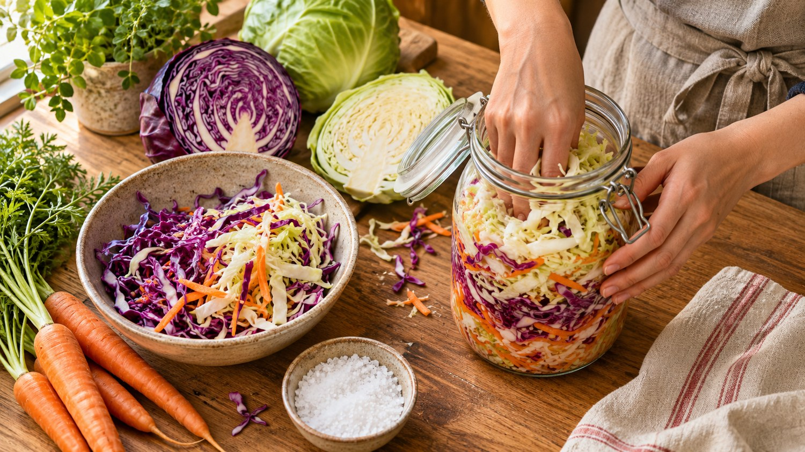

Alimentación
Encuentra formas de comer que disfrutes y que puedas incorporar a tu día a día.
Health coaching
Acompañamiento para dar pasos concretos hacia el bienestar, a partir de lo que te importa y al ritmo que puedes sostener.
Explora el enfoque
Encuentra formas de comer que disfrutes y que puedas incorporar a tu día a día.
Explora actividades que te gusten y que tengan cabida en tu rutina.
Haz espacio para las pausas y para una rutina que te ayude a desconectar.
Guía digital · PDF
Una guía de fermentados para principiantes en formato PDF.